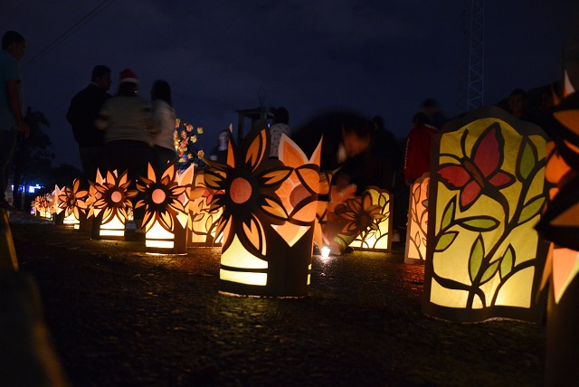

Se lanzó en Quimbaya la versión número 42 del Festival de Velas y Faroles

Se lanza oficialmente la 42ª versión del tradicional Festival de Velas y Faroles de Quimbaya, un símbolo de unidad y tradición que ha unido a la comunidad año tras año y que fortalece la identidad cultural del municipio.
Este viernes se presentara la nueva imagen del festival de velas y faroles en Quimbaya
Este viernes a las 7:00 de la noche en el centro cultural de artistas del municipio de Quimbaya tendrá lugar la presentación de la imagen oficial de la 37° versión del Festival de velas y faroles de Quimbaya.
Quimbaya sin alumbrado navideño y con un festival de velas y faroles en decadencia

El municipio Luz de Colombia podría tener este diciembre de 2023 la navidad menos iluminada de las últimas 4 décadas gracias a la ineptitud y falta de liderazgo de la alcaldía encabezada por Abelardo Castaño Marín.